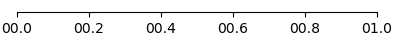

Ticks module
The ticks module adds a couple of functions to
matplotlib.axes.Axes as shortcuts to the locators and formatters
provided by matplotlib.ticker.
Here, their usage is demonstrated for the x-axis, but of course the
equivalent functions for the y-axis exist as well. Simply replace
xticks by yticks in the function name.
import numpy as np
import matplotlib.pyplot as plt
import plottools.ticks
fig, ax = plt.subplots()
Increments
ax.set_xticks_delta(0.5)
Custom format
ax.set_xticks_format('%04.1f')

SI unit prefixes
ax.set_xscale('log')
ax.set_xlim(1e-6, 1e0)
ax.set_xticks_prefix()

Fractions
ax.set_xlim(-1, 1)
ax.set_xticks_fracs(4)

Multiples of Pi
ax.set_xlim(-np.pi, 2*np.pi)
ax.set_xticks_pifracs(2)
Pi in the nominator
ax.set_xlim(0, 4*np.pi/3)
ax.set_xticks_pifracs(3, True)

Fixed locations
ax.set_xticks_fixed((0, 0.3, 1))

Fixed locations and labels
ax.set_xticks_fixed((0, 0.5, 1), ('a', 'b', 'c'))
No tick labels
ax.set_xticks_blank()
You most likely want to use common_xlabels() from the axes module.
No ticks at all
ax.set_xticks_off()